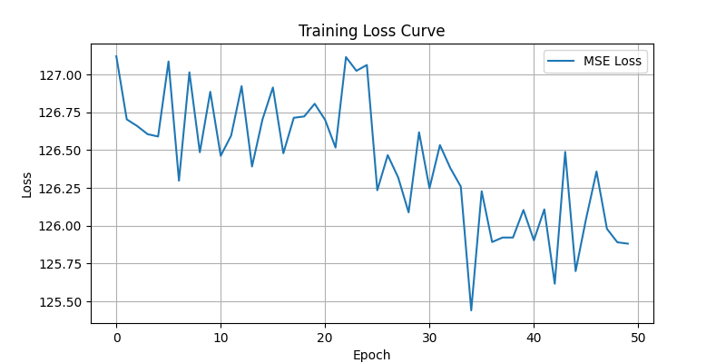

üõí E-Commerce Clickstream Analysis
Analyzed event-level user clickstream data to identify churn behavior, funnel drop-offs, and key conversion paths. Built predictive churn models using XGBoost and visualized insights using Streamlit.
üó£Ô∏è AI-Based Text-to-Speech (TTS)
End-to-end speech synthesis using FastSpeech2 and HiFi-GAN. Supports phoneme-based training with mel spectrograms, real-time inference via ONNX. Goal: replicate ElevenLabs-quality voice generation.
üìä Customer Segmentation using ML
Segmented users using K-Means and DBSCAN after RFM feature engineering. Identified high-LTV cohorts and tailored marketing actions accordingly. Visualizations helped in reporting user behavior groups.
üìà Stock Market Prediction App
Developed a Flask app to upload stock CSVs and train models (Linear Regression, Random Forest, KNN) to forecast future prices. Results visualized with matplotlib graphs and dynamic prediction UI.